The local GUI (apps/gui), driven through every screen with headless Chrome on 2026-10-14, and the strategy-viewer mockup from proposal B. They accompany the two proposals in this folder: A-multiway-next-steps.md and B-strategy-viewer.md.
GUI
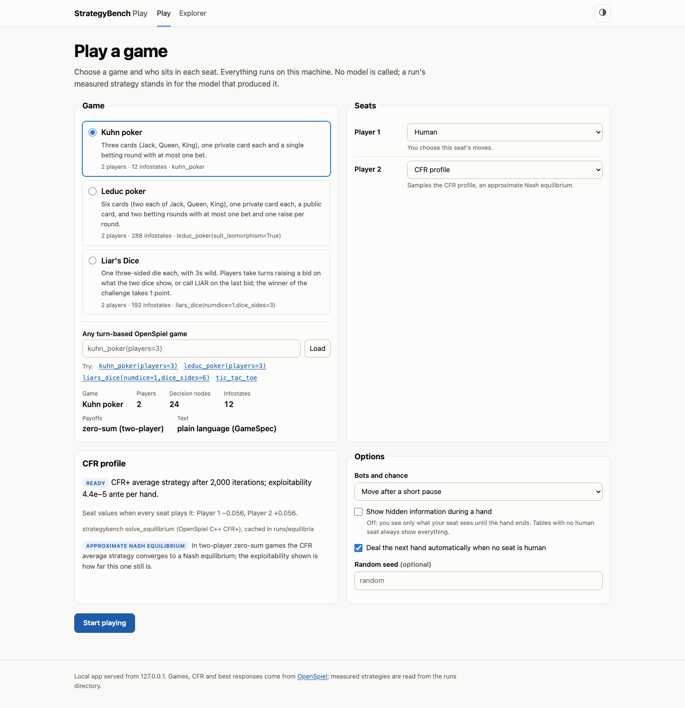
Setup. The three registered games, any OpenSpiel game string, a seat per player (human, uniform, CFR profile or a measured run), and the CFR profile's status with an honest statement of what it guarantees.
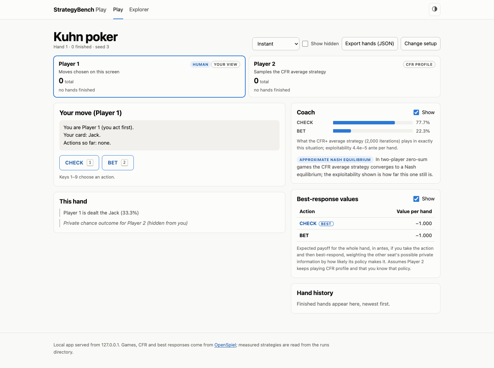
Playing Kuhn against the CFR profile. Your card is shown, the opponent's is hidden. The coach shows the CFR profile's mix in this situation; best-response values show what each action is worth against the opponent's actual policy.
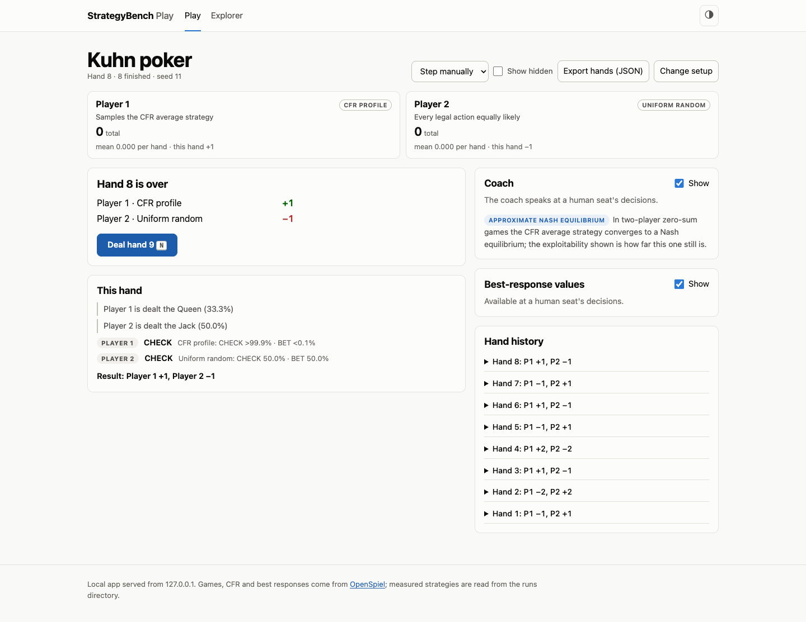
Bots only. CFR profile against uniform random, dealing automatically; totals, per-hand means and the hand history (eight hands here, netting to exactly 0).
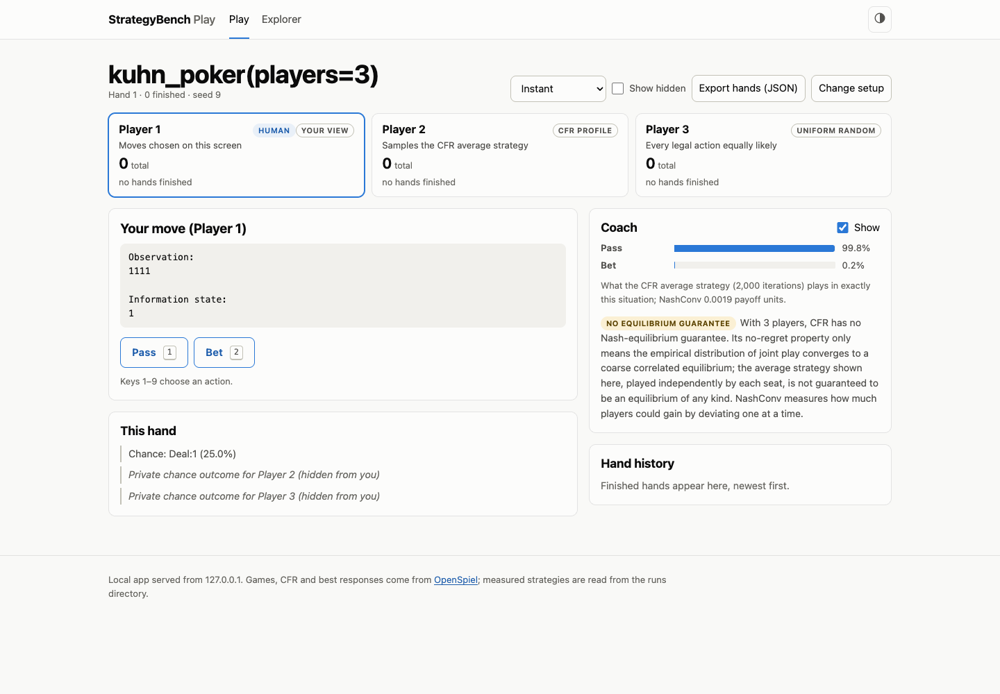
Three-player Kuhn (a custom game string). OpenSpiel's own text, three seats, no best-response panel (two-player only), and the "no equilibrium guarantee" warning with NashConv and its unit (one of the two fixes).
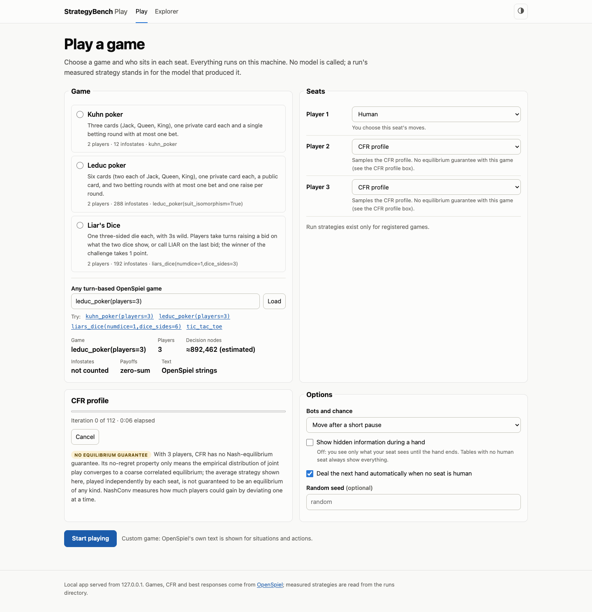
A long CFR computation (three-player Leduc, about 7 minutes) runs in a background process with progress and a Cancel button; cancelling stops the process.
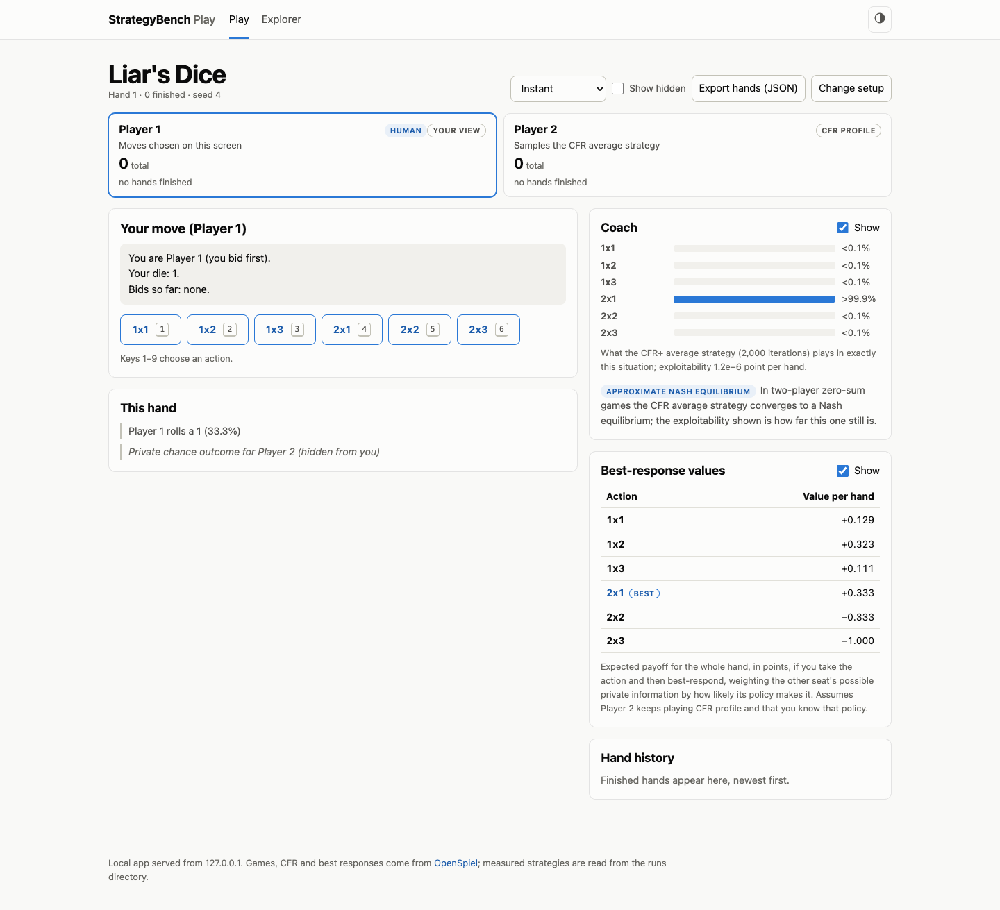
Liar's Dice: six bids, the coach and the best-response values.
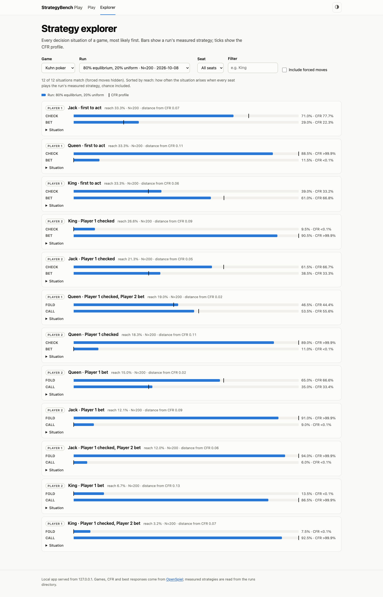
Explorer. Every Kuhn situation, most likely first: bars are a measured run, ticks the CFR profile. Every track now has the same length (the other fix), so bars compare across rows.
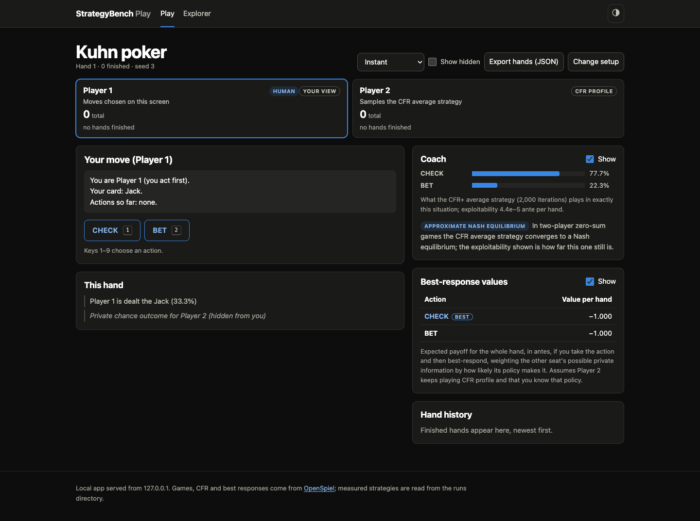
Dark theme.
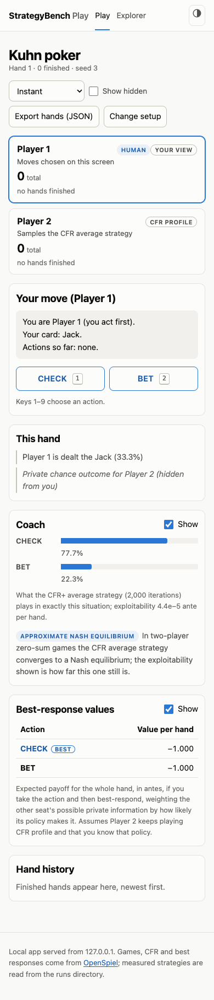
Phone width: no horizontal scrolling on any screen.
Proposal B mockup (invented subject)
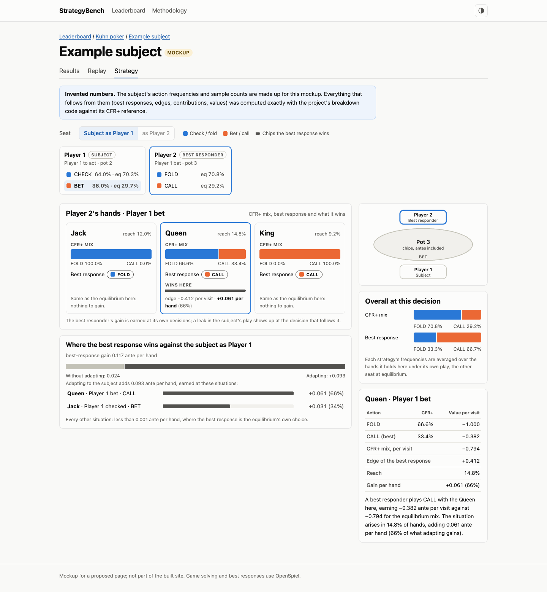
Where the best response wins. Player 2 facing a bet: the CFR+ mix per card, the best response, and the 0.061 ante per hand it wins with the Queen. The subject's frequencies are invented; everything else was computed exactly with the project's breakdown code.
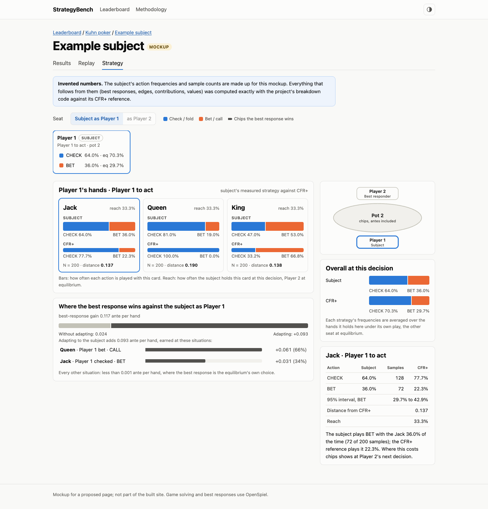
The subject against CFR+ at Player 1's first decision, with exact numbers for the Jack.